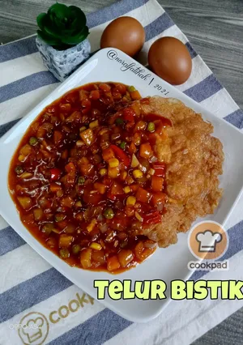

Telur Bistik

Telur Bistik
Telur bistik boleh menjadi makanan bajet sekiranya sudah jemu dengan makanan bajet lain seperti mi segera, nasi bujang, dll
Ramuan
Bahan Utama
- 1/2 Biji Bawang Besar, potong dadu kecil
- 2 ulas bawang putih, cincang halus
- 1 biji cili merah, potong dadu kecil
- 1 mangkuk kecil isi ayam
- 1 mangkuk kecil sayur campur
- 3 sudu besar sos cili
- 3 sudu besar sos tomato
- 1 sudu besar sos tiram
- 1 sudu kecil garam
- sedikit air
- daun bawang, hiris nipis
Ramuan untuk telur goreng
- 3 biji telur
- 2 sudu besar mayonis
- 1/2 sudu kecil lada hitam
- 1/2 sudu kecil garam
Home